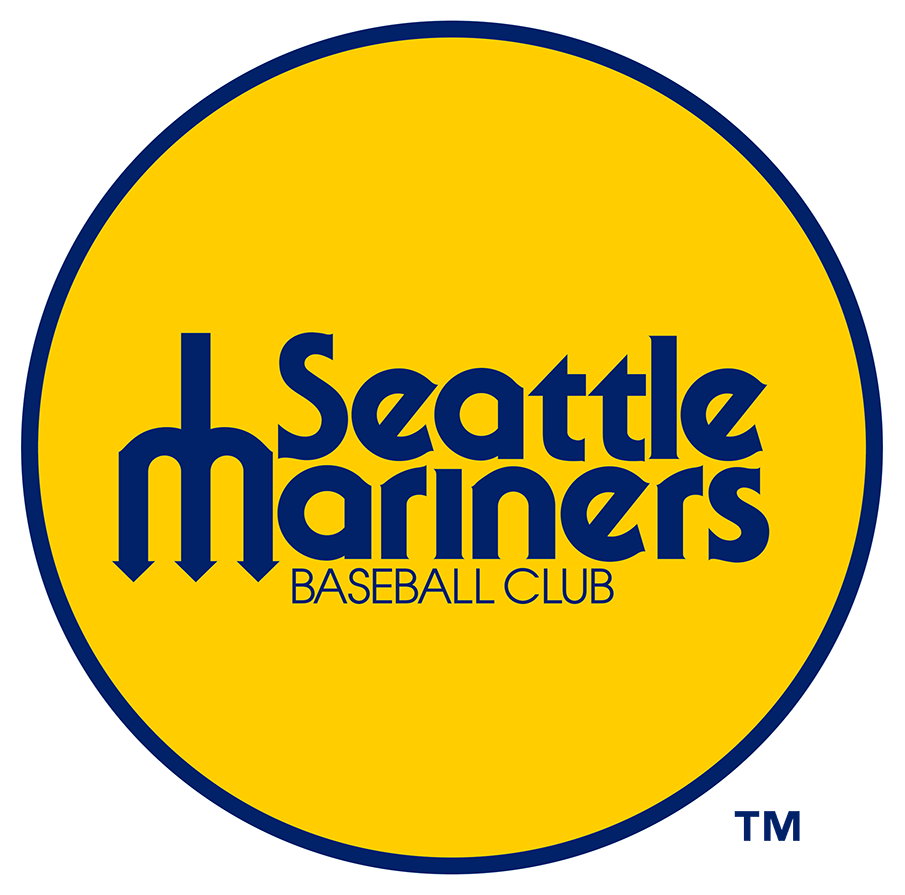
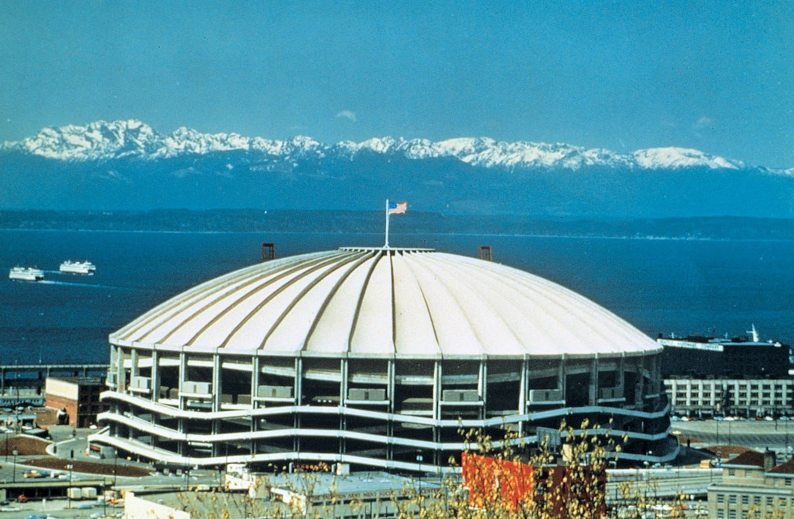
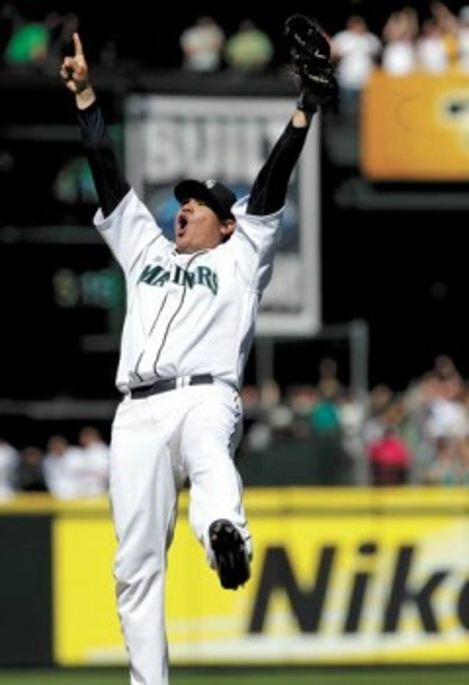

Team History

On February 6th 1976, the American League awarded an expansion team to Seattle, which the city then named the team "The Seattle Mariners". The "Mariners" name originates from the prominence of marine culture in the city of Seattle.
- 1976: Franchise created after a lawsuit over the relocation of the Seattle Pilots.
- 1977: Played first game on April 6, 1977, in the Kingdome.
- The Seattle Mariners are the only active franchise in Major League Baseball (MLB) that has never played in the World Series
Stadiums

On February 6th 1976, the American League awarded an expansion team to Seattle, which the city then named the team "The Seattle Mariners". The "Mariners" name originates from the prominence of marine culture in the city of Seattle.
- The Seattle Mariners played in the Kingdome from 1977-2000, when it was then demolished.
- Safeco Field Park was built in place of the Kingdome and is currently still where they play however is now named "T-Mobile Park".
- T-Mobile Park can hold 47,943 people and also has a retractable, allowing for open-air or covered baseball.
Felix Hernandez

Felix Hernandez was one of the most dominant pitchers of all time in his prime with the Seattle Mariners, which is why he was dubbed "The King" for his nickname.
- Only player in MLB history to pitch a perfect game, throw an immaculate inning, and hit a grand slam.
- Played 15 years with the Seattle Mariners 2005-2019, and won the 2010 AL Cy Young Award and was a 6 time all-star.
- Debuted at the age of 19 on August 4th, 2005
Fun Mariners Facts
Here are a couple more fun Seattle Mariner facts
- 116 wins
- Did you know the Seattle Mariners are tied for the most wins ever in an MLB season with the 1906 Chicago Cubs at 116 wins in the 2001 season?
- Nintendo
- Did you know that Nintendo, yes the video game company, saved the team in 1992? Hiroshi Yamauchi purchased a majority stake of the team simply as a thank you to the city of Seattle for supporting his business, even though he had never attended a baseball game!
- Father-Son Duo
- Did you know that Ken Griffey Sr and Ken Griffey Jr made MLB history by becoming the first, and only, father son duo to hit back-to-back home runs in the same game?
For more information on the Seattle Mariners and the MLB visit www.mlb.com/mariners